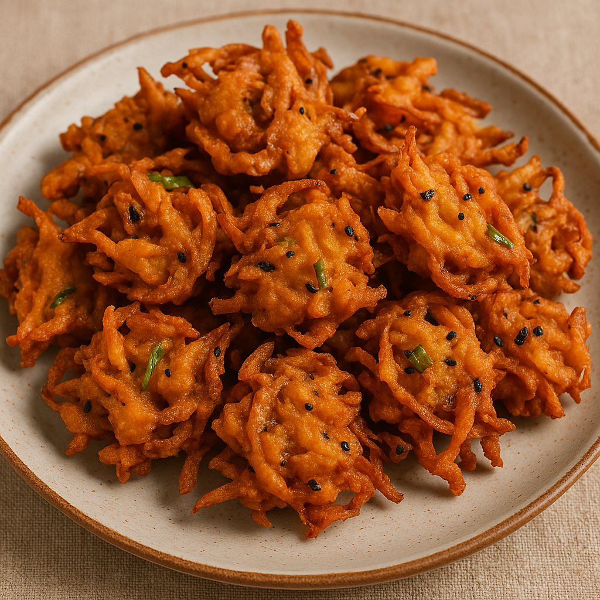

INGREDIENTS
Telebhaja:
- 1 large onion (thinly sliced)
- ½ cup besan (gram flour)
- 2 tbsp rice flour (for extra crispiness)
- 1-2 green chilies (finely chopped)
- 1 tsp nigella seeds (kalonji) (optional but traditional)
- ½ tsp turmeric powder
- A pinch of baking soda (optional for fluffiness)
- Mustard oil or vegetable oil (for deep frying)
- Salt to taste
Recipe
- Prep the onions:
- Thinly slice the onions and sprinkle a little salt on them.
- Let them sit for 10 minutes. This draws out water and softens them.
- Make the batter:
- Add besan, rice flour, turmeric, green chilies, and nigella seeds to the onions.
- Mix everything well. The water released by onions should help bind the flour.
- Add a few spoons of water if needed to make a thick batter. The batter should stick to the onions but not be too runny.
- Heat the oil:
- Heat mustard oil in a deep pan until it’s hot but not smoking. Reduce to medium.
- Fry:
- Drop small portions of the mixture into the oil.
- Fry until golden brown and crispy. Turn occasionally.
- Drain:
- Take them out on paper towels to soak excess oil.
- With a cup of steaming chai or kasundi (mustard sauce). Perfect with puffed rice (muri) too!